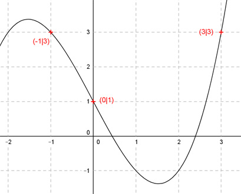

Aufgabe 62 Der Graph einer ganzrationalen Funktion 3. Grades hat einen Wendepunkt bei (0|1) und an den Stellen x = -1 und 3 jeweils den Funktionswert 3. Wie lautet seine Funktionsgleichung?  Allgemeine Form einer ganzrationalen Funktion 3. Grades: f(x) = ax3 + bx2 + cx + d f’(x) = 3ax2 + 2bx + c f’’(x) = 6ax + 2b 4 Bedingungen: 1. Hat einen Wendepunkt bei (0|1) bedeutet zum einen: f(0) = 1 --> a * 03 + b * 02 + c * 0 + d = 1 --> d = 1 2. Hat einen Wendepunkt bei (0|1) bedeutet zum anderen: f’’(0) = 0 --> 6a * 0 + 2b = 0 --> 2b = 0 |:2 --> b = 0 3. Hat an der Stelle x = -1 den Funktionswert 3 bedeutet (d = 1 und b = 0 eingesetzt): f(-1) = 3 --> a * (-1)3 + c * (-1) + 1 = 3 --> -a - c + 1 = 3 |-1 -a - c = 2 I 4. Hat an der Stelle x = 3 den Funktionswert 3 bedeutet (d = 1 und b = 0 eingesetzt): f(3) = 3 --> a * 3³ + c * 3 + 1 = 3 --> 27a + 3c + 1 = 3 |-1 27a + 3c = 2 II I * 3 + II -3a - 3c = 6 27a + 3c = 2 ------------- 24a = 8 |:24 a = 1/3 a = 1/3 in II eingesetzt: 27 * (1/3) + 3c = 2 9 + 3c = 2 |-9 3c = -7 |:3 c = -7/3 Gesuchte Funktionsgleichung: f(x) = (1/3)x3 - (7/3)x + 1